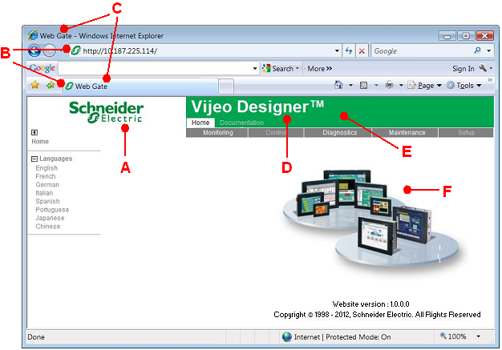

|
|
|
|
|
|
|
|
Vijeo Designer allows you to customize the Web Server and Web Gate pages so you can display a company-specific logo and information. After the project is downloaded to a target machine and a web user connects to the target machine through a browser on a remote PC, the web user will see your customized information and data rather than the standard Vijeo Designer and Schneider Electric information.
You can replace the following Vijeo Designer standard elements with customized elements on the Web Server and Web Gate pages:
|
A |
Logo. Schneider Electric logo that links to the web server home page. |
|
B |
Icon. Schneider Electric icon on the Browser tab. |
|
C |
Page Title. Web Gate page title in the window title bar and tab. |
|
D |
Product Title. Vijeo Designer product title. |
|
E |
Text Color and Back Color. Product title's white text color and green background color. |
|
F |
Default Frame Image. Image of Vijeo Designer supported target machines as the default page image. |

To customize your web page:
Before you begin setting up, make sure you set Web Server and Web Gate to Enabled in the Target properties.
In the Target properties, expand Web Server and then expand Web Gate.
Set the Customize View property to Enabled, and click the ellipsis to open the Customize Web Server View dialog box.
Define the property settings in the Customize Web Server View dialog box to customize the elements.
|
Property |
Description |
|
Enable Customization |
Web page customization is enabled when the check box is selected in:
–or–
–or–
When you update either of the above locations, the other two properties will update to display the same selection. The properties in the dialog box are enabled when the Enable Customization check box is selected. |
|
Logo |
Select the Logo check box to change the logo on the web page. The Browse Logo Files dialog box opens automatically if an image file is not defined. Specify the image file you want. You may want to consult with your web-site administrator to determine the appropriate logo images to use. The image file must be in .gif, .jpg, .jpeg, .bmp, or .png file format. The width of the image must be from 1 pixel to 2880 pixels. |
|
Icon |
Select the Icon check box to change the icon on the web page. The Browse Icon Files dialog box opens automatically if an image file is not defined. Specify the image file you want. The image file must be in the .ico file format. |
|
Default Frame Image |
Select the Default Frame Image check box to change the default frame image on the web page. The Browse Default Frame Graphics Files dialog box opens automatically if an image file is not defined. Specify the image file you want. The image file must be in .gif, .jpg, .jpeg, .bmp, or .png file format. |
|
Page Title |
Select the Page Title check box to change the page title. You can enter 1 to 100 ASCII characters. You cannot leave the page title empty. |
|
Product Title |
Select the Product Title check box to change the product title. You can enter up to 50 ASCII characters. |
|
Text Color Back Color |
To replace the existing text and background colors, click the colored rectangles to open the Color dialog box. Then select a valid RGB value. For more information on RGB values, see Sections 7.3.1, Color Palatte, and 7.3.2, RGB Values. |
If you do not define a customized element, the Web page will use the associated Vijeo Designer standard element.
You can use the InfoViewer to preview the customized Web page. When the Customize Web Server View dialog box is opened, the InfoViewer is also opened, brought to the front, and displays the Web page according to the settings defined in the dialog box. The Web page content in the InfoViewer updates immediately when the settings in the dialog box are modified, except for changes made to the Page Title and Product Title. If you make changes to the Page Title and Product Title, click Refresh to update the Web page displayed in the InfoViewer. You can also click OK to update the Web page; the page will update as long as there are no errors in the property settings.